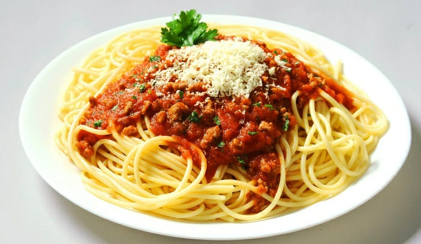

Fideitos con tucardo

Descripcion
Un suculento plato calentito acompanado de pan o galletitas de fideos con tuco bien condimentado
Ingredientes
- 1 kilo de carne
- 2 cebollas
- 130cm cubicos de aceite
- 2 dientes de ajo
- 3 hojas de laurel
- 1 cucharada de oregano
- 2 cucharadas de conserva de tomates
- 200 gramos de pure de tomate
- 1 taza de caldo de carne
- sal
- pimienta
- aji molido
- 1 paquete de fideos
- queso parmesano rallado
Pasos
- Dorar la carne cortada en una olla grande con aceite. Una vez que haya dorado, retirar de la olla y agregar las cebollas y el ajo picados. Rehogar revolviendo con una cuchara preferiblemente de madera y agregar las hojas del laurel y el orégano.
- Agregar el extracto y puré de tomate, el caldo y los condimentos. Poner a hervir la preparación y dejar a fuego bajo. Agregar la carne a la salsa ya hirviendo.
- De ser necesario agregar un poco de agua a la preparación, sin embargo el tuco debe ser espeso.
- Mientras el tuco se cocina, poner a hervir una cacerola con agua y sal para cocinar la pasta de modo tradicional. Cuélala cuando esté lista y sírvela en un plato hondo con el tuco recién preparado encima.
- Si gustas puedes agregar queso rallado.